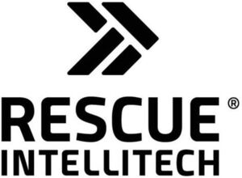

Trade Mark Journal No.2026/007 13 February 2026
WO0000001886496 (7,11,35,36)
Office of origin: European Union Intellectual Property Office (EUIPO)
Date of International Registration:5 September 2025
Date of designation in the UK:
5 September 2025

International priority date claimed: 26 March 2025
(European Union Intellectual Property Office (EUIPO))
(019162732)
- Class 7
- Washing machines [laundry] and cleaning machines and machines for cleaning protective equipment, protective clothing, breathing packs (breathing masks and separate air supply), breathing masks, helmets, boots, gloves, regulator packages, pressure switches, machine tools, and parts and fittings therefor, namely engine valves, baskets, holders, inserts and racking for laundry purposes and for cleaning purposes; condensation separators; machine coupling components, except for land vehicles; filtering machines; cartridges for filtering machines.
- Class 11
- Apparatus for drying; sinks and parts and fittings therefor (included in this class).
- Class 35
- Marketing services; retail services, including online retail services in relation to washing machine and cleaning machines and machines for cleaning protective equipment, protective clothing, breathing packs (breathing masks and separate air supply), breathing masks, helmets, boots, gloves, regulator packages, pressure switches, machine tools, and parts and fittings therefor, namely machines for metallurgy, wicker, holders, inserts and stands, for laundry use and for cleaning purposes.
- Class 36
- Leasing and subscriptions for washing and cleaning machines and machines for cleaning protective equipment, protective clothing, breathing packs (breathing masks and separate air supply), breathing masks, helmets, boots, gloves, regulator packages and pressure switches, machine tools and parts and fittings therefor, namely baskets, holders, inserts and racks for washing and cleaning purposes; leasing of drying apparatus and sinks and parts and components thereof.
RESCUE Intellitech AB
Representative: HANSSON THYRESSON AB, Norra Vallgatan 58, SE-201 20 Malmö, SWEDEN